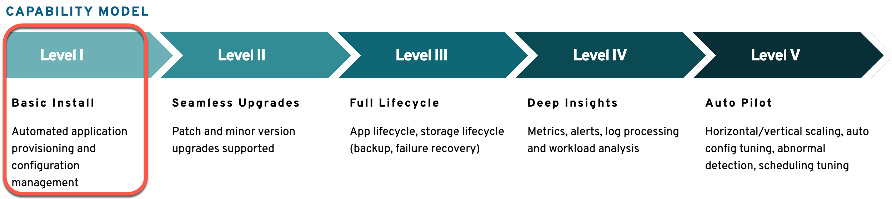
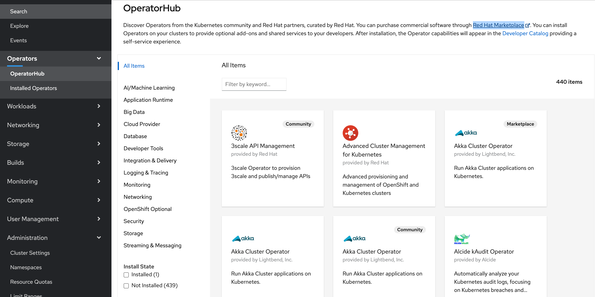

Operator Framework and Ansible Hands-on Workshop¶
Introduction¶
In this workshop you will automate the deployment of an Hello World! application to OpenShift, with an Hello World operator, implemented with Ansible.
Your first simple operator will do for you the automates of the creation of :
- a deployment
- a service
- a route
- Therefor it needs to collect the application domain information
Your operator will have some of the capabilities in Level 1 as you see in the image below.
Note: The image resource you can find on the Operator Framework: What? page.

This is the definition for Level 1 from the Operator Framework
Features
Installation Of The Workload
Operator deploys an Operand or configures off-cluster resources
Operator waits for managed resources to reach a healthy state
Operator conveys readiness of application or managed resources to the user leveraging the status block of the Custom Resource
Configuration Of The Workload
Operator provides configuration via the spec section of the Custom Resource
Operator reconciles configuration and updates to it with the status of the managed resources
Objectives¶
This workshop will show you how to setup a development environment and deploy your first Operator written in Ansible.
Upon completing this workshop you will learn the following:
- Setup Ansible Operator Development Environment
- Create Operator Scaffolding and Custom Resource Definition (CRD/RD)
- Test and Debug Operators
- Read parameter inputs from Custom Resource Definition (CRD/RD) into Ansible facts
- Read and create k8s objects using the k8s Ansible Module
- Deploy Application
Estimated time and level¶
| Time | Level |
|---|---|
| 60 min | beginner to intermediate |
Note: The installation of all prerequistes isn't included.
Prerequisites¶
- A fedora 30 or higher system (not a container image) with access to the Internet
- OpenShift 4.x Cluster environment and a cluster admin account
It would be good, if you are basicly familar with ...
- ... Podman or Docker
- ... using container registries like Quay.io
- ... handle
YAMLs - ... deployments of containers to RedHat OpenShift
Technology/Frameworks Used¶
Additional information:
Following tools are needed to be installed on your local machine:
- Python
- Podman or Docker
- curl
- IBM Cloud CLI (depending on your cloud provider)
- OpenShift CLI (oc)
- Kubernetes CLI (kubectl)
- GO
- make
- 0perator SDK using Ansible
Credits¶
- Keith Tenzer (creater of the initial version of the workshop)
- Ross Cruickshank (Thanks, for testing the worshop on "IBM Cloud Open Labs" and for your valuable feedback)
- Thomas Südbröcker
Additional resources¶
YouTube "How it does work?":
- Building Kubernetes Operators with the Operator Framework and Ansible (Keith Tenzer)
- Kubernetes Operators Explained
- What is Ansible?
- Operators on OpenShift Container Platform 4.x
Operator Resources:
Internal OperatorHub in your RedHat OpenShift cluster.
